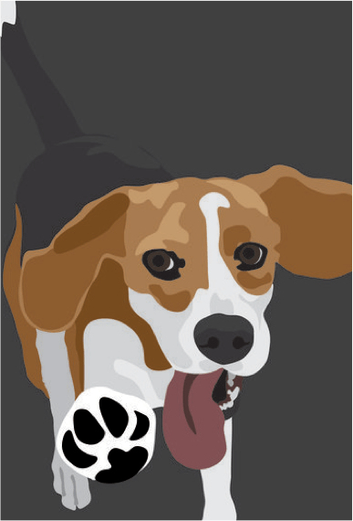
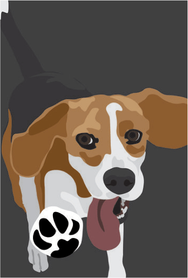

00 Overview
01 Cirriculum
02 Tuition
03 Admissions
04 Student Work
GRAPHIC
DESIGN
DESIGN
School away from school.

This way to GD
“Graphic Design is a multidisciplinary program in which you gain a solid understanding of the fundamentals of design and develop creative visualization, problem solving, and critical thinking skills. Using industry standard software and hardware, you will build diverse portfolios with a wide range of print and web projects. Explore the global, social, and ethical issues of graphic design at each stage of the program.”
00 Overview
Bachelor of Arts in Graphic Design / 127 total credit hours
The field of graphic design offers exciting careers for aspiring designers. Designers with a Bachelor of Arts in Graphic Design may work across industries in marketing, communications, advertising, or in product packaging design. The goal of graphic design is to communicate a specific message to a specific audience. Aesthetically pleasing, inspiring print and web design begin with a solid understanding of design fundamentals.
The Bellevue University online Bachelor of Arts in Graphic Design degree includes thorough preparation and hands-on practice in:
• Print design and Web design
As a graphic design student, you will start with the elements of design and use problem-solving and critical thinking skills to form a visual representation of a communication idea. In the online graphic design program, you will:
• Understand how color, images, layout, typography, and other principles influence design,
branding, and messaging
• Build on those concepts and create design solutions for a wide range of audiences
• Use various media and technologies for print and web design with confidence
The Bellevue University online Bachelor of Arts in Graphic Design degree includes thorough preparation and hands-on practice in:
• Print design and Web design
As a graphic design student, you will start with the elements of design and use problem-solving and critical thinking skills to form a visual representation of a communication idea. In the online graphic design program, you will:
• Understand how color, images, layout, typography, and other principles influence design,
branding, and messaging
• Build on those concepts and create design solutions for a wide range of audiences
• Use various media and technologies for print and web design with confidence
The online Graphic Design degree program requires the use of industry standard graphic design software and hardware. Please see the Curriculum page for specific technology requirements. Integrating hands-on, applied learning with theory, all Bellevue University degrees are designed to deliver a transformative student learning experience that is flexible to accommodate your personal and work life.
Program Outcomes
You will develop a professional portfolio that represents a body of creative design work on a wide range of print and digital projects. You may use this to communicate your ideas and skill as a graphic designer to prospective employers or clients, or as a preparation for future graduate study.
In addition, at successful completion of the Bellevue University Bachelor’s in Graphic Design, you will be able to:
• Utilize the critical thinking process used in the graphic design field.
• Effectively discuss graphic design as a visual communication language.
• Skillfully use industry standard software and hardware tools.
• Apply the proper production methods in print and/or web design.
• Develop a portfolio that represents a wide range of projects produced at a professional level.
Program Outcomes
You will develop a professional portfolio that represents a body of creative design work on a wide range of print and digital projects. You may use this to communicate your ideas and skill as a graphic designer to prospective employers or clients, or as a preparation for future graduate study.
In addition, at successful completion of the Bellevue University Bachelor’s in Graphic Design, you will be able to:
• Utilize the critical thinking process used in the graphic design field.
• Effectively discuss graphic design as a visual communication language.
• Skillfully use industry standard software and hardware tools.
• Apply the proper production methods in print and/or web design.
• Develop a portfolio that represents a wide range of projects produced at a professional level.
36
42
49
127
GENERAL EDUCATION CREDITS
ELECTIVES
MAJOR CREDITS
TOTAL CREDITS
Bachelor of Arts in Graphic Design
127 total credit hours
127 total credit hours
01 Cirriculum
Degree Information
Graphic Design is a multidisciplinary program in which you gain a solid understanding of the fundamentals of design and develop creative visualization, problem solving, and critical thinking skills. Using industry standard software and hardware, you will build diverse portfolios with a wide range of print and web projects. Explore the global, social, and ethical issues of graphic design at each stage of the program.
Major Requirements (49 credit hours)
(Click a course name below to view course details) Unless noted, all courses are 3 credit hours.
Graphic Design is a multidisciplinary program in which you gain a solid understanding of the fundamentals of design and develop creative visualization, problem solving, and critical thinking skills. Using industry standard software and hardware, you will build diverse portfolios with a wide range of print and web projects. Explore the global, social, and ethical issues of graphic design at each stage of the program.
Major Requirements (49 credit hours)
(Click a course name below to view course details) Unless noted, all courses are 3 credit hours.
+ GD 116 Problem-solving and Idea Generation (3 Credits)
+ GD 210 Design Basics (3 Credits)
+ GD 215 History of Contemporary Graphic Design (3 Credits)
+ GD 220 Fundamentals of Print Design (3 Credits)
+ GD 230 Fundamentals of Web Design (3 Credits)
+ GD 232 Fundamentals of JavaScript (3 Credits)
+ GD 260 Typography (3 Credits)
+ GD 320 Single Page Design (3 Credits)
+ GD 332 Interactivity Basics (3 Credits)
+ GD 350 Branding (3 Credits)
+ GD 355 Identity Design (3 Credits)
+ GD 420 Publication Design (3 Credits)
+ GD 430 Web Page Design (3 Credits)
+ GD 435 Website Development (3 Credits)
+ GD 495 Portfolio (4 Credits)
+ GD 210 Design Basics (3 Credits)
+ GD 215 History of Contemporary Graphic Design (3 Credits)
+ GD 220 Fundamentals of Print Design (3 Credits)
+ GD 230 Fundamentals of Web Design (3 Credits)
+ GD 232 Fundamentals of JavaScript (3 Credits)
+ GD 260 Typography (3 Credits)
+ GD 320 Single Page Design (3 Credits)
+ GD 332 Interactivity Basics (3 Credits)
+ GD 350 Branding (3 Credits)
+ GD 355 Identity Design (3 Credits)
+ GD 420 Publication Design (3 Credits)
+ GD 430 Web Page Design (3 Credits)
+ GD 435 Website Development (3 Credits)
+ GD 495 Portfolio (4 Credits)
Kirkpatrick Signature Series Requirements (9 credit hours)
(In addition to the Major Requirements, all Bellevue University students must complete the Kirkpatrick Signature Series)
+ LA 400 American Vision and Values (3 Credits)
+ LA 410 Tradition and Change (3 Credits)
+ LA 420 Freedom and Responsibility (3 Credits) your major and be on track to earn 127 total semester credit hours. Major includes the Kirkpatrick Signature Series.
Major Requirements (127)
Credit Hour Summary
Transfer eligible credits, or credits earned at Bellevue University.
Computer Requirements:
To see if your hardware meets Adobe’s system requirements, please go to the links below.
These are the most commonly used Adobe applications in the GD program:
• Adobe Illustrator
• Adobe InDesign
• Adobe Photoshop
• Adobe XD
View all the Adobe system requirements
Other Requirements
• Subscription to Adobe Creative Cloud software
• Pointing device (mouse, trackball, graphics tablet, trackpad)
• Color printer (or access to one) for proofing and mocking up work
• Digital camera/smartphone (minimum 8 megapixels) or a scanner
• Broadband Internet
• Sketchbooks
• Basic art supplies such as, X-Acto knife, straight edge, spray mount, rubber cement, paper,
etc., as per project needs.
Students applying for professional license or certification should verify the University’s offerings meet the requirements with the professional organization.
(In addition to the Major Requirements, all Bellevue University students must complete the Kirkpatrick Signature Series)
+ LA 400 American Vision and Values (3 Credits)
+ LA 410 Tradition and Change (3 Credits)
+ LA 420 Freedom and Responsibility (3 Credits) your major and be on track to earn 127 total semester credit hours. Major includes the Kirkpatrick Signature Series.
Major Requirements (127)
Credit Hour Summary
Transfer eligible credits, or credits earned at Bellevue University.
Computer Requirements:
To see if your hardware meets Adobe’s system requirements, please go to the links below.
These are the most commonly used Adobe applications in the GD program:
• Adobe Illustrator
• Adobe InDesign
• Adobe Photoshop
• Adobe XD
View all the Adobe system requirements
Other Requirements
• Subscription to Adobe Creative Cloud software
• Pointing device (mouse, trackball, graphics tablet, trackpad)
• Color printer (or access to one) for proofing and mocking up work
• Digital camera/smartphone (minimum 8 megapixels) or a scanner
• Broadband Internet
• Sketchbooks
• Basic art supplies such as, X-Acto knife, straight edge, spray mount, rubber cement, paper,
etc., as per project needs.
Students applying for professional license or certification should verify the University’s offerings meet the requirements with the professional organization.
Apply by March 15 for admissions
Put Your Creative Talents and Passions to Work.
Tuition
2020 / 2021 Academic Year
Traditional Bachelor’s
$299 In-Class
$425 Online
(Additional fees may apply to individual courses within your major requirements)
Military Preferred (Active Duty and Spouses Only)
Active duty members of the United States Military, National Guard, Reserve and Coast Guard (and their spouses) who declare this Undergraduate major are eligible for a tuition rate of $250.00 per credit hour for all courses in their Undergraduate Degree.
2020 / 2021 Academic Year
Traditional Bachelor’s
$299 In-Class
$425 Online
(Additional fees may apply to individual courses within your major requirements)
Military Preferred (Active Duty and Spouses Only)
Active duty members of the United States Military, National Guard, Reserve and Coast Guard (and their spouses) who declare this Undergraduate major are eligible for a tuition rate of $250.00 per credit hour for all courses in their Undergraduate Degree.
02 Tuition
Admissions
1. All applicants for admission to Bellevue University are required to submit an Application for Admission accompanied by a one-time application fee of $50 for undergraduate programs. However, If you are an International student please see the following specific information: International Student Bachelor Admissions
2. Submit official documentation of high school completion. Documentation can include the following:
• Official high school transcript
• GED certificate
• Homeschool letter of completion and Attestation Form
• Certificate demonstrating that the student has passed a state authorized
examination recognized by the state in which it is awarded - equivalent to a
high school diploma.
• Self-certification method (applicants who have earned at least 9
postsecondary semester credit hours and have graduated from an
approved high school). Please contact our Admission Counselors to see if
you qualify.
3. An applicant transferring from another institution of higher education also must satisfy the following requirements:
Submission of an official transcript from each accredited institution previously attended. A transcript can be sent through a secure electronic method busrtranscripts@bellevue.eduor by mail, however it is required to be sent directly from the issuing institution to Bellevue University’s Student Records Department to be considered an official document. Please check with previous institution for available sending options.
Applicants who submit an official transcript which reflects a two-year degree from a regionally accredited postsecondary institution are not required to show proof of high school completion.
Transcripts must be submitted even though credit may not have been earned at previous institution or if transfer credit is not granted.
+ Foreign Credential Evaluation Process
4. Transfer in good standing from the last institution of higher education attended. No individual course will be accepted for transfer when it carries a grade below "C-." Associate and bachelor's degrees, however, are transferred in full.
5. Students dismissed from another institution during the previous five years for academic or disciplinary reasons will be accepted for admission after one year has elapsed since dismissal from that institution. Dismissed students will be accepted only in academic probation status. On occasion, students may make special application to the appropriate college dean and the Dean of Academic Services/Dean of Students, respectively, for provisional admission before completion of the one-year suspension.
6. In all cases of transfer, the credit evaluation is completed by the Registrar’s Office using guidelines set forward by the Council for Higher Education Accreditation (CHEA).
1. All applicants for admission to Bellevue University are required to submit an Application for Admission accompanied by a one-time application fee of $50 for undergraduate programs. However, If you are an International student please see the following specific information: International Student Bachelor Admissions
2. Submit official documentation of high school completion. Documentation can include the following:
• Official high school transcript
• GED certificate
• Homeschool letter of completion and Attestation Form
• Certificate demonstrating that the student has passed a state authorized
examination recognized by the state in which it is awarded - equivalent to a
high school diploma.
• Self-certification method (applicants who have earned at least 9
postsecondary semester credit hours and have graduated from an
approved high school). Please contact our Admission Counselors to see if
you qualify.
3. An applicant transferring from another institution of higher education also must satisfy the following requirements:
Submission of an official transcript from each accredited institution previously attended. A transcript can be sent through a secure electronic method busrtranscripts@bellevue.eduor by mail, however it is required to be sent directly from the issuing institution to Bellevue University’s Student Records Department to be considered an official document. Please check with previous institution for available sending options.
Applicants who submit an official transcript which reflects a two-year degree from a regionally accredited postsecondary institution are not required to show proof of high school completion.
Transcripts must be submitted even though credit may not have been earned at previous institution or if transfer credit is not granted.
+ Foreign Credential Evaluation Process
4. Transfer in good standing from the last institution of higher education attended. No individual course will be accepted for transfer when it carries a grade below "C-." Associate and bachelor's degrees, however, are transferred in full.
5. Students dismissed from another institution during the previous five years for academic or disciplinary reasons will be accepted for admission after one year has elapsed since dismissal from that institution. Dismissed students will be accepted only in academic probation status. On occasion, students may make special application to the appropriate college dean and the Dean of Academic Services/Dean of Students, respectively, for provisional admission before completion of the one-year suspension.
6. In all cases of transfer, the credit evaluation is completed by the Registrar’s Office using guidelines set forward by the Council for Higher Education Accreditation (CHEA).
03 Admissions
 


This site provides a means for our students to develop and test their work on a live server. If you are looking for fresh talent, please scroll down to view the portfolios of a few of our recent graduates.

BU Portfolios